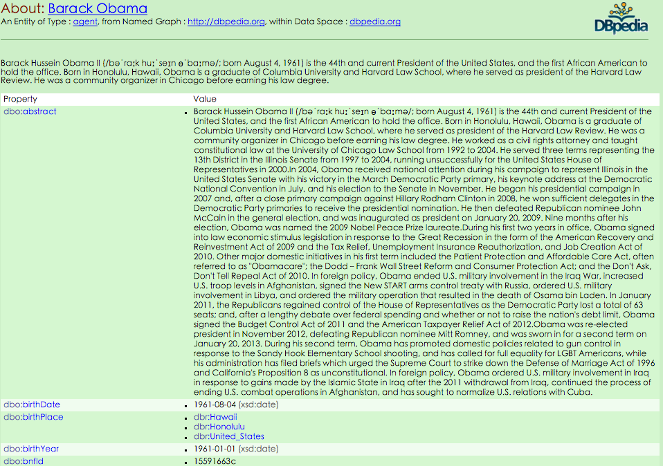

About DBpedia
According to DBpedia itself, DBpedia is a crowd-sourced community effort to extract structured information from Wikipedia and make this information available on the Web. DBpedia allows you to ask sophisticated queries against Wikipedia, and to link the different data sets on the Web to Wikipedia data. We hope that this work will make it easier for the huge amount of information in Wikipedia to be used in some new interesting ways. Furthermore, it might inspire new mechanisms for navigating, linking, and improving the encyclopedia itself.
Community Projects
Below is a list of DBpedia community projects:
- Datasets gives an overview about the DBpedia knowledge base.
- Ontology gives an overview about the DBpedia ontology.
- Online Access describes how to access data set via a SPARQL and as Linked Data.
- Downloads provides the DBpedia data sets for download.
- Interlinking describes how the DBpedia data set is interlinked with other datasets.
- Use Cases lists different use cases for the DBpedia data set.
- Extraction Framework describes the DBpedia information extraction framework.
- Data Provision Architecture paints a picture of the software and protocols used to serve DBpedia.
- Community explains how the DBpedia community collaborates and how to contribute to the DBpedia.
- DBpedia Mapping Wiki containing the mappings used by the DBpedia extraction.
- DBpedia Internationalization Effort working towards providing multiple language-specific versions of DBpedia.
- DBpedia-Live presents the new DBpedia-Live framework.
- DBpedia Spotlight presents the DBpedia Spotlight tool for the semantic annotation of textual content.
- Credits lists the people and institutions that have contributed to DBpedia so far.
- Change Log lists the DBpedia releases and gives an overview about the changes for earch release.
- Publications lists scientific papers as well as blog posts about DBpedia.
- Next steps describes ideas and future plans for the DBpedia project.
Predefined Namespace Prefixes
When DBpedia is queried by SPARQL, a set of predefined prefixes can be used as abbreviation of URIs representing resources in DBpedia.
The availability of prefixes depends on the SPARQL endpoints the user is using although there are some convention followed by most endpoints.
Below is a list of commonly used prefixes:
-
owl: <http://www.w3.org/2002/07/owl#>
This resource partially describes the built-in classes and properties. -
xsd: <http://www.w3.org/2001/XMLSchema#>
This resource describes the XML Schema namespace and also contains a directory of links to these related resource. -
rdfs: <http://www.w3.org/2000/01/rdf-schema#>
This resource provides a data-modelling vocabulary for RDF data. RDF Schema is an extension of the basic RDF vocabulary. -
rdf: <http://www.w3.org/1999/02/22-rdf-syntax-ns#>
This resource provides The RDF Concepts Vocabulary which defines the RDF concept of an RDF datatype. -
foaf: <http://xmlns.com/foaf/0.1/>
This resource describes the FOAF language, defined as a dictionary of named properties and classes using W3C's RDF technology. -
dc: <http://purl.org/dc/elements/1.1/>
This resource sepecifies all metadata terms maintained by the Dublin Core Metadata Initiative. -
: <http://dbpedia.org/resource/>
This is the root URI of all DBpedia Semantic Webs about things. -
dbpedia2: <http://dbpedia.org/property/>
This is the root URI of all DBpedia Semantic Webs about properties. -
dbpedia: <http://dbpedia.org/>
This is prefix abbreviate the root URI of DBpedia. -
skos: <http://www.w3.org/2004/02/skos/core#>
This resource describes the schema available from the SKOS namespace.
A full list of DBpedia SPARQL predefined namespcaes and prefixes can be found here.
Using Prefixes
Prefixes can be used as the abbreviation of the resource URI in a SPARQL query.
Below is an example of a ordinary SPARQL query that returning all the type property of Barack Obama:
SELECT ?type WHERE {
<http://dbpedia.org/resource/Barack_Obama> rdf:type ?type.
}
Most SPARQL endpoints define the abbreviation : referring to the URI <http://dbpedia.org/resource/>. The resource URI to Barack Obama in the example above can to simplified to :Barack_Obama.
Below is an example of a SPARQL query equivalent to the above one but using prefixes:
SELECT ?type WHERE {
:Barack_Obama rdf:type ?type.
}
Alternative Way of Browsing DBpedia
Despite the simplicity of querying DBpedia by SPARQL, it seems to be more intuitive to browsing DBpedia in traditional web browser. For each URI in DBpedia resource root <http://dbpedia.org/resource/>, there is a corresponding HTML page under the directory <http://http://dbpedia.org/page/> that visualize all property of the piece of resource. For example, Barack Obama with DBpedia URI <http://dbpedia.org/resource/Barack_Obama> has a HTML page at <http://dbpedia.org/page/Barack_Obama>. Opening the latter one with web browser, a table similar to the following one will be printed.

The table has all properties that the resource has at the first column with the corresponding values at the second column.